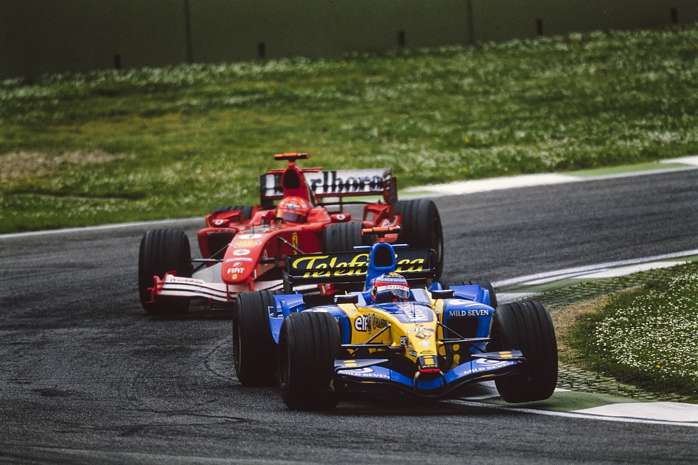
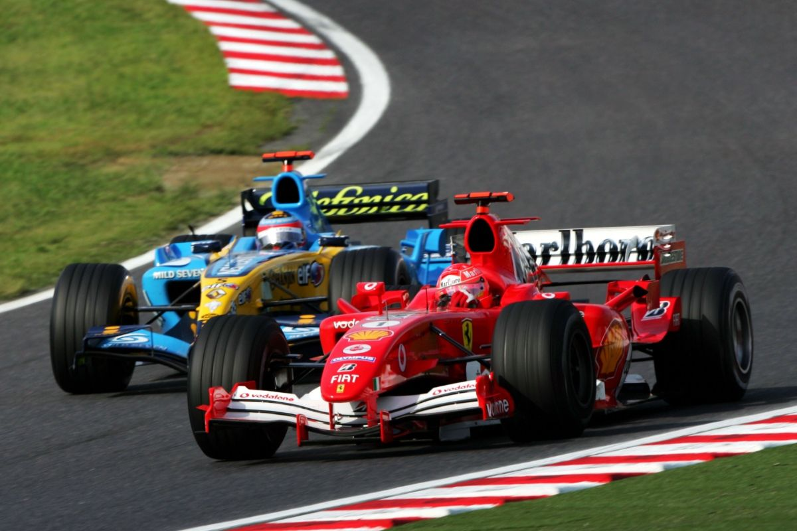
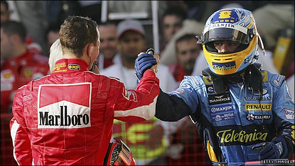

O duelo que encerrou a era de ouro de Maranello. De um lado, o heptacampeão Michael Schumacher no auge de sua forma técnica pela Ferrari; do outro, o jovem asturiano Fernando Alonso, trazendo uma pilotagem agressiva e estratégica com a Renault. Foi o choque entre a experiência absoluta e a ousadia da nova era.

Uma das maiores defesas da história da F1. Schumacher tinha um carro muito mais rápido e pressionou Alonso por 12 voltas seguidas, colado na traseira da Renault.
Alonso não cometeu um único erro, posicionando o carro com perfeição em cada curva. Ali, o mundo percebeu que Schumacher finalmente tinha um rival à altura que não se intimidava com o retrovisor cheio de vermelho.

Se havia alguma dúvida sobre a coragem de Alonso, ela acabou no GP do Japão. Ele ultrapassou Schumacher por fora na lendária curva 130R, um dos pontos mais perigosos do calendário.
Foi um movimento simbólico. O jovem piloto espanhol mostrava que estava disposto a arriscar tudo para superar o "Kaiser" em seu próprio território.

A temporada de 2006 foi uma guerra de resistência. Schumacher anunciou sua aposentadoria e queria sair por cima com o 8º título. Alonso queria o bicampeonato para provar que 2005 não foi sorte.
A disputa foi decidida nos detalhes técnicos e na confiabilidade. Com a quebra do motor de Schumacher no Japão, Alonso garantiu a vantagem necessária para se tornar o mais jovem bicampeão da época, encerrando formalmente o domínio da era Schumacher na Ferrari.
A rivalidade terminou com o maior respeito possível: Michael reconheceu Fernando como seu sucessor legítimo, e Alonso sempre declarou que Schumacher foi o maior desafio de sua vida.